Seven moves: pick a format that supports the query, fetch from the right repository, pin the reference by hash, ship the tool in a container, wire it together as a DAG, benchmark against a truth set, archive so it still runs in ten years.
Learning objectives
- Describe the major bioinformatics file formats (FASTQ, BAM, CRAM, VCF/BCF, HDF5/Zarr, Parquet, GFA) and the engineering tradeoffs that distinguish them.
- Explain CRAM as content-aware compression vs BAM's generic gzip and estimate compression ratios for typical sequencing data.
- Navigate the public bioinformatics data ecosystem: SRA/ENA, GEO, dbGaP, EGA, cloud-hosted datasets. Identify which repositories are suitable for which data types and access models.
- Diagnose "which GRCh38 am I using" problems: decoy contigs, ALT loci, ALT-aware vs ALT-unaware mapping. Pick a reference build appropriately.
- Explain why bioinformatics has unusually severe dependency hell, and evaluate containers (Docker, Singularity/Apptainer) and environment managers (conda, mamba, pixi) as solutions.
- Compare workflow languages (Nextflow, Snakemake, WDL, CWL) as specialised dataflow languages with resume-on-failure, resource management, and cloud execution.
- Interpret a GIAB-based precision/recall benchmark (hap.py) of a variant caller; explain what the benchmark guarantees and what it does not.
- Describe the cultural and institutional practices of the field: preprints (bioRxiv), nf-core pipeline curation, community ownership of open-source tooling.
Part 1 · 40 min File Formats and Their Tradeoffs
1.1 Why file formats matter
Most lectures in this course have focused on algorithms — how to align reads, call variants, integrate modalities. But every algorithm sits on top of file formats that dictate what operations are fast and what operations are painful. A good format lets you random-access into a 100 GB file in microseconds; a bad format forces you to stream 100 GB to extract 100 bytes.
Bioinformatics has accumulated ~30 years of formats, some elegant, some regrettable. Learning them isn't glamorous but it's most of the skill needed to work productively at scale. Every industry role in computational biology will ask: "given this data in format X, produce this answer in format Y, at this scale, on this budget." Knowing what each format costs is the prerequisite.
Four design dimensions matter for any genomics format:
- Random access — can I jump to "the reads covering chr7:12345–12500" without reading the whole file?
- Compression ratio — how much space does the format save vs raw text?
- Schema evolution — can I add a new field without breaking readers of old files?
- Tool ecosystem — which libraries / languages can read it?
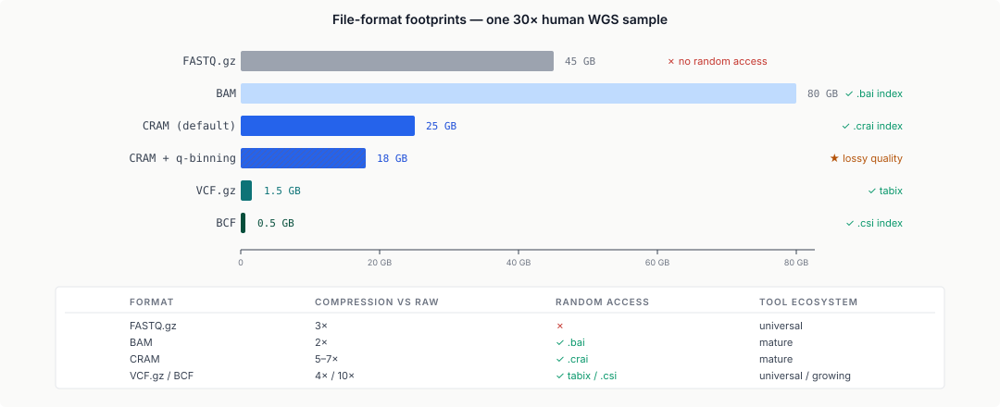
1.2 FASTQ, BAM, CRAM
FASTQ — four lines per read: @ID, sequence, +, quality string. Human-readable text; near-universal input format for raw sequencing. Typically gzip-compressed, producing ~3× reduction over raw text. Limits: no random access, no alignment, no metadata beyond the header line. Good for "move raw reads from sequencer to first-step tool"; terrible for "show me reads at chr7:12345."
BAM (Binary Alignment/Map) — the binary version of SAM. BAM is bgzipped (blocked gzip with 64 KB blocks) so that a .bai index can specify offsets to jump into specific genomic regions. Every alignment record has: read name, flags, reference position, CIGAR, mate position, quality scores, optional tags.
BAM was the standard for ~15 years. But its compression is generic zlib per-block — the same compression you'd get on any random binary data, ignoring the fact that genomics data has enormous redundancy (most reads match the reference).
CRAM (Compressed Reference-based Alignment/Map; Cochrane, Cochrane & Birney 2013) exploits that redundancy. The key insight: for each aligned read, you don't need to store the full sequence — only the differences from the reference (which is already on every genomics workstation). CRAM stores:
- Per-read metadata (name, flags, position) in columnar, compressed blocks.
- Per-base differences from the reference (substitutions, insertions, deletions), not the full base sequence.
- Quality scores, which are now the dominant cost, compressed with specialised codecs (often with lossy binning — "q ≥ 30" vs "< 30" buckets).
Compression result: CRAM is typically 40–60% smaller than BAM, often 4× smaller if quality-score binning is enabled. With a reference file present, decompressing a CRAM costs you a reference lookup per base difference; without the correct reference, a CRAM is useless — you can't recover the read sequences.
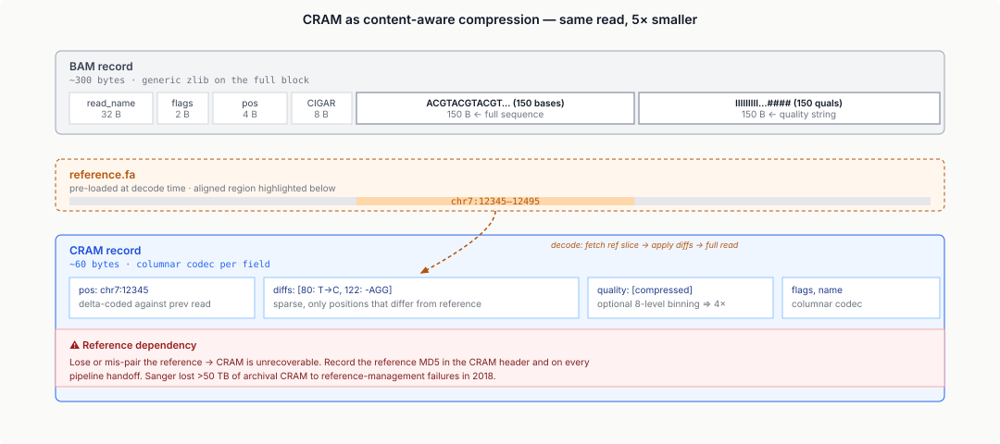
The cost: CRAM requires the reference genome to be present at decode time, and the reference identity must be recorded and fetchable. Mismatches between the CRAM-writing reference and the decode-time reference corrupt the data silently. Modern CRAM files record a reference MD5 hash to catch this; old files sometimes don't, and those become unreadable over time. Ref-lookup tooling (REF_CACHE, REF_PATH, the EBI reference-fetch server) exists to paper over this.
1.3 VCF and BCF
VCF (Variant Call Format, §Lecture 4) — tab-delimited text, one row per variant site, with genotype columns per sample. Fields: CHROM, POS, ID, REF, ALT, QUAL, FILTER, INFO (semi-structured key-value), FORMAT (per-sample fields, e.g. GT, DP, GQ). The FORMAT columns are where most of the per-sample data lives. Bgzipped + tabix-indexed VCF is the working standard.
BCF (Binary Call Format) — the binary companion. Same data, ~3× smaller, ~5× faster to parse. Random access via .csi index. For cohorts with > 1,000 samples, BCF is essentially mandatory.
The pain point: VCF/BCF scales badly in the number-of-samples dimension. A VCF with 500k samples (UK Biobank) is ~500 GB for common variants alone and doesn't fit the "per-row is cheap" assumption that tooling makes. Format extensions (sparse VCF, GVCF, project-VCF formats like Hail's MatrixTable) handle biobank scale by splitting or reformatting.
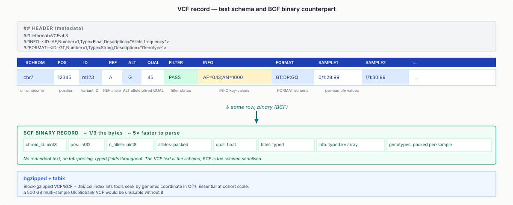
1.4 HDF5, Zarr, AnnData, Parquet
The flat-file-with-index model breaks for high-dimensional data. Single-cell (§Lectures 7 and 8) produces matrices of counts (cells × genes × modalities × batches). Methylation (§Lecture 10) produces per-CpG-per-sample matrices. GWAS summary statistics (§Lecture 13) produce trait × SNP tables. These need chunked, random-access, compressible multi-dimensional containers.
HDF5 — hierarchical data format, binary, self-describing. Groups (like directories) containing datasets (like files) with named attributes. Chunked storage with per-chunk compression. The standard for single-cell: AnnData (.h5ad) is HDF5 under the hood, with conventions for X (main matrix), obs (cell metadata), var (gene metadata), obsm / varm (reduced dimensions). Limits: HDF5 is a single-file format with a proprietary-ish binary structure; parallel writes are possible but fiddly; cloud access requires downloading the whole file (or partial-range requests, which work but are clunky).
Zarr — chunked multi-dim arrays stored as a directory of small files (one per chunk). Each chunk has a deterministic path. Perfect for cloud object stores (S3, GCS) because each chunk is a single HTTP GET. Schema-evolution via .zmetadata. Used by modern single-cell tooling (AnnData v0.10+ supports Zarr backend; MuData uses it for multi-modal).
Parquet — columnar format from the Apache data-lake world, now adopted by bioinformatics for summary-statistic tables. Columnar layout enables fast aggregation (sum / mean / filter over a column without reading other columns). Standard for GWAS summary stats in UK Biobank and other large studies. Supported by every data-processing ecosystem — Spark, Dask, DuckDB, Polars.
GFA (Graphical Fragment Assembly) — text format for pangenome graphs, covered in §Lecture 11. Listed here to emphasise that graphs don't fit neatly into table formats; GFA is the current standard but has its own ergonomics.
1.5 Schema evolution
A format is only good long-term if it lets you add fields without breaking old readers. VCF does this well (INFO / FORMAT fields are self-describing; unknown fields are ignored). HDF5 does this well (datasets are self-describing). BAM does this moderately (TAG fields are extensible; core fields are fixed). FASTQ does this poorly (the format is ad hoc; there's no "new field" story).
The format ecosystem is not static. Every decade or so the field introduces a new format (SAM → BAM, BAM → CRAM; HDF5 → Zarr) that supersedes an older one. Not all transitions succeed: BAM → CRAM took ~8 years to become standard; BGZF → modern alternatives hasn't happened. Adoption depends on tool ecosystem, not format merits alone.
1.6 A quick note on scale
Typical scales a 2025 bioinformatician encounters:
- Single-sample WGS at 30× coverage: ~90 Gb raw → 45 GB FASTQ.gz → 80 GB BAM → 25 GB CRAM.
- Cohort WGS: 100k samples × 25 GB CRAM ≈ 2.5 PB.
- Single-cell: 1 M cells × 30k genes × 4 bytes ≈ 120 GB; with multi-modal extensions (RNA + ATAC + protein) 3–5×.
- GWAS summary stats: 10 M SNPs × 10 fields × 8 bytes ≈ 800 MB per trait; thousands of traits = multi-TB.
Whatever you think you'll work on, assume it won't fit in RAM. Every design question in the field is shaped by this.
Part 2 · 30 min Where Data Lives
2.1 The public data ecosystem
Bioinformatics has unusual public-data norms. Major journals require raw sequencing data be deposited before publication in one of a handful of repositories:
- SRA (Sequence Read Archive, NIH). US canonical home for raw sequencing data. Free access. Accessions:
SRP…project,SRR…run,SRS…sample. - ENA (European Nucleotide Archive, EBI). European counterpart; mirrors SRA. Accessions start
ERP…,ERR…,ERS…. - DDBJ Sequence Read Archive (Japan). Third leg of the INSDC collaboration; mirrors SRA/ENA.
- GEO (Gene Expression Omnibus, NIH). Processed-data repository for microarray and RNA-seq — usually count matrices, metadata, sometimes processed figures. Most RNA-seq studies deposit raw reads in SRA and processed counts in GEO.
- ArrayExpress (EBI). GEO's European counterpart.
All four above are free, open-access, and mirror each other. Controlled-access repositories (restricted by IRB / data-use committee):
- dbGaP (database of Genotypes and Phenotypes, NIH). Access requires a data-use agreement and approval. Holds individual-level genotype + phenotype data from US cohorts.
- EGA (European Genome-phenome Archive, EBI/CRG). European controlled-access equivalent. UK Biobank, FinnGen, many clinical cohorts deposit here.
- GDC (Genomic Data Commons, NCI). Cancer genomics; hosts TCGA, TARGET, other NCI-funded projects.
Every clinical cohort with identifiable genomic data sits in dbGaP / EGA / GDC, not SRA / ENA.
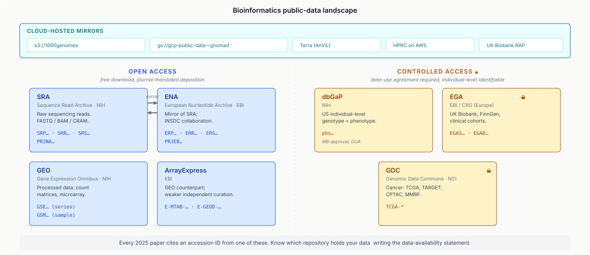
2.2 Cloud-hosted public data
For large public datasets, direct download from FTP is slow and awkward. Cloud-hosted copies have become the de facto standard:
- 1000 Genomes on AWS (
s3://1000genomes), GCS, and Azure. - gnomAD on Google Cloud Storage (
gs://gcp-public-data--gnomad). - GTEx on AnVIL (Terra-based).
- UK Biobank RAP (Research Analysis Platform, DNAnexus-hosted). Not free — compute is billed to the researcher.
- All of Us on the All of Us Researcher Workbench (Terra).
- HPRC pangenome releases on AWS + GitHub.
Two cost models:
- Free egress (most open-access cloud mirrors): you pay for compute on the same cloud but data transfer is free within the same region.
- Requester-pays buckets: the person running the query pays for byte-egress. How most large cloud datasets monetise or cover their storage costs.
The politics: cloud-hosting has shifted who bears cost. Before cloud, the repository paid for storage and bandwidth (i.e. NIH taxpayers). Now, researchers pay per-analysis on the compute side, and the repositories pay for baseline storage only. This is mostly a transparency improvement but it shifts the burden of analysis cost from the agency to the PI. For long-tail / small-lab research this can matter a lot.
2.3 Accessions, metadata, and citation
Every public dataset has a deposition record with:
- An accession ID (stable, citable). For SRA:
SRP…project,SRR…run,SRS…sample,SRX…experiment,PRJNA…BioProject. - Metadata: sample characteristics (tissue, disease status, age, sex), experimental protocol (library prep, sequencer model, read length), processing pipeline.
- Associated publications: when cited, links the data record to the paper.
A paper's "data availability" statement should point to the accessions. Citation format varies but the accession itself is the citable artefact — not the URL, not the file hash, not the FTP path. For processed data (e.g. a public count matrix in GEO), the accession (GSE…, GSM…) carries the same role.
PRJEB…" again.
2.4 The SRA toolkit and friends
Standard tools for repository access:
sra-tools/prefetch+fasterq-dump: NIH's SRA download tools.enaBrowserTool: Python + command-line client for ENA.aria2cwith parallel connections: generic accelerator for any HTTP mirror.awscli/gcloud storage cp: for cloud-hosted copies.
Typical pain points: "download is slow" (default tools use a single TCP stream — split into many parallel streams with aria2c -x 16); "I can't download 500k files at once" (cloud sync tools like aws s3 sync are designed for this); "I downloaded the wrong version" (repositories rarely delete, they re-version — pin the accession and submission date).
2.5 Preprints and archival culture
Bioinformatics shares with other ML-heavy fields a strong preprint culture: bioRxiv is where most new methods land before peer review. Peer review still happens downstream but the community reads preprints routinely. This matters for reproducibility: when a tool paper lands on bioRxiv, its code, Docker image, and benchmark data are usually already on GitHub + Zenodo + BioContainers; waiting for peer review to access the artefacts is exceptional.
Part 3 · 20 min Reference Data Management
3.1 Why "which GRCh38" is a question
Lecture 11 discussed the reference-genome evolution (GRCh37/hg19 → GRCh38/hg38 → T2T-CHM13). But "GRCh38" itself has multiple variants:
- Primary assembly only — chromosomes 1–22, X, Y, MT. What most basic analyses use.
- Primary + unplaced contigs — chromosomes plus ~300 unassembled pieces (short, mostly repetitive). Some aligners use these to prevent mis-mapping to chromosomes.
- Primary + alt loci — chromosomes plus ~250 "alternate loci" (genomic regions with common large-scale variation, like the HLA region). Mapping against alt loci requires ALT-aware tools; doing it wrong fragments coverage.
- Primary + unplaced + alt loci + decoys — plus ~2,300 "decoy" sequences: artificial sequences that capture known reads not matching the main reference (centromeres, viral / bacterial contamination). Prevents mis-mapping of these reads onto real chromosomes.
- GRCh38-p14 — the fourteenth patch release, adding and fixing a modest number of sequences since the original GRCh38 release in 2013.
Different tools expect different variants. BWA-MEM with default settings wants "primary only" for simplicity. ALT-aware mappers (BWA-MEM with -K and .alt file) want the full variant. DeepVariant's recommended pipelines expect a specific variant with a specific decoy set (NCBI's GRCh38_full_analysis_set_plus_decoy_hla.fa).
Mixing — running DeepVariant expecting decoys against a reference without decoys — produces garbage silently. Most reference-mismatch bugs cause no crash; they just produce subtly wrong results.
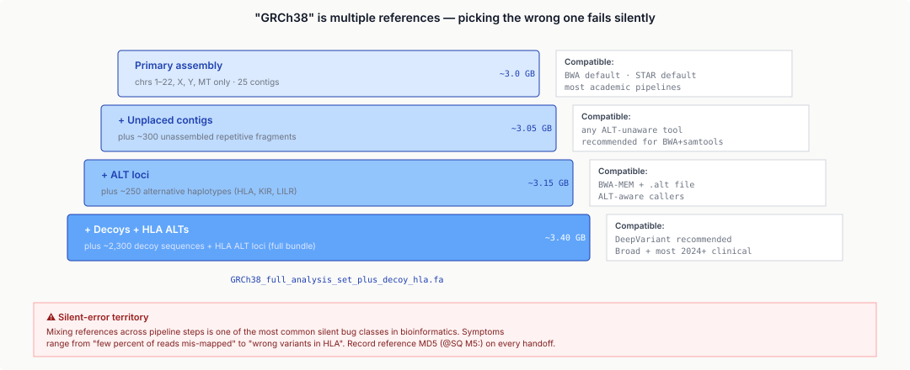
3.2 Reference management tools
Ad-hoc reference management is a minor nightmare: a typical genomics team accumulates dozens of "GRCh38" files across users, years, and projects, each subtly different.
- iGenomes (Illumina). A bundled reference distribution with hg19, hg38, mouse, rat, etc., plus pre-built aligner indices. Widely used because "grab the tarball" is fast. Downside: heavyweight (~100 GB per genome with all indices), and the maintainers update slowly.
- refgenie (Stolarczyk et al. 2020). A reference-asset management server. Stores references and derived artefacts (BWA index, STAR index, GTF, etc.) by a stable hash-based ID. CLI fetches specific assets on demand. Multi-user; supports remote servers.
- Ensembl FASTA releases (EBI). Versioned FASTAs with consistent naming (
Homo_sapiens.GRCh38.dna.primary_assembly.fa). Tracked by release number (e.g. Ensembl 110). Widely used because naming is clean. - NCBI datasets CLI. NCBI's modern interface for reference downloads; replaces the older
efetchtoolkit for most use cases.
Best practices at a team scale: pin the reference version by its MD5 (not by filename); store references in a well-known path (e.g. /shared/refs/GRCh38/), not per-user; co-locate the derived indices (.fai, .dict, BWA index, STAR index, Salmon index) so a downstream tool pointed at the FASTA also has the index it needs; record the reference used in every analysis artefact (BAM, VCF header, pipeline metadata).
GRCh38_full_analysis_set_plus_decoy_hla.fa, Ensembl release N). Aha: reference choice is a deliberate decision driven by the downstream tool's expectations, not a default.
3.3 Annotations — GTF, GFF, BED
Beyond the raw sequence, annotations (gene models, transcripts, exons, coding regions) are tracked in separate files:
- GFF3 (General Feature Format v3). Human-readable tab-delimited; 9 columns; hierarchical (gene → transcript → exon via
Parent=attribute). Current standard for gene-model exchange. - GTF (Gene Transfer Format). A simpler GFF predecessor still in heavy use. Less strict parent-tracking; every line independent.
- BED (Browser Extensible Data). Tab-delimited, minimal (3–12 columns). Used for everything that doesn't need GFF's hierarchy: ChIP peaks, CpG regions, enhancer annotations, blacklists. Genome browsers (UCSC, IGV) consume BED natively.
Pain point: gene-model sources differ. Ensembl and RefSeq disagree on where some transcripts start / end; UCSC's knownGene is yet another track. Cross-referencing annotations from different sources requires careful name-space conversion. Tools like gffcompare and agat help.
Part 4 · 30 min Containerization
4.1 Why dependency hell is bad in bioinformatics
Every scientific computing discipline has dependency problems, but bioinformatics has them especially badly. Reasons:
- Mixed ecosystems. A typical pipeline uses R (statistics), Python (ML + glue), and C/C++ tools (aligners, variant callers), plus shell scripts. Each has its own dependency management that was not designed to cooperate.
- System-level dependencies. Many tools compile against specific versions of libhts, zlib, openssl, glibc. A tool that worked on Ubuntu 18.04 may not work on Ubuntu 22.04 because libcrypto was bumped.
- Unmaintained academic software. A paper published in 2014 with a GitHub repo often has zero maintenance since. The README says "run
./install.sh"; theinstall.shassumes Python 2.7. Attempting to use this in 2025 is a multi-day project. - Unstable APIs in R/Bioconductor. Bioconductor releases update every six months; packages often break on major releases. Pinning R + Bioconductor versions is essential.
- GPU drivers + CUDA. Deep-learning tools (AlphaFold, Enformer, scVI, deep-variant caller variants) need specific CUDA + driver combinations. Local mismatches cause cryptic failures.
The result: before containers became standard, "getting the damn thing to run" frequently dominated actual analysis time. Stories of spending a week on a tool install are commonplace.
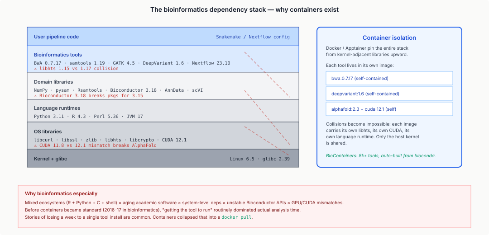
4.2 Containers — Docker, Singularity, Apptainer
A container is an OS-level package that bundles an application plus all its userland dependencies (libraries, binaries, data), sharing only the host's kernel. Not a VM — no hypervisor, no emulated hardware, ~0 overhead. Introduced in Linux via cgroups + namespaces (circa 2008); popularised by Docker (2013); adopted by bioinformatics around 2016.
Docker: the industry standard. Images are layered (each instruction in a Dockerfile is a layer); images are stored in registries (Docker Hub, quay.io, GitHub Container Registry). Pulling an image and running it is one command: docker run -v $PWD:/data biocontainers/bwa:0.7.17 bwa mem …. Caveat: Docker requires root-level privileges on the host to manage its daemon; most academic clusters block it.
Singularity / Apptainer: the HPC/academic answer. Runs containers as the invoking user (no root daemon), reads Docker images natively (via conversion to Singularity's .sif format). Dominant on academic clusters. apptainer exec image.sif bwa mem … is the common workflow. Apptainer is the community fork after the Singularity project went commercial; most academic deployments are on Apptainer now.
Podman: Red Hat's rootless Docker alternative. Used mostly by system administrators; rarely by end-user scientists.
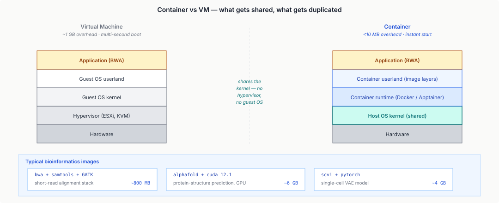
4.3 Conda, mamba, pixi
Before containers dominated, conda was the dependency-management solution. Conda installs packages into per-project "environments" (isolated directories); packages include prebuilt binaries (not just Python — also C libs, R, etc.); conda solves a SAT-like problem to find a mutually-consistent version set ("dependency resolution"). Problem: conda's default solver is slow (often minutes for a moderate environment) and sometimes fails to find a solution.
Mamba — a drop-in replacement for conda using libsolv (Red Hat's fast SAT solver). Much faster dependency resolution. Community default.
Pixi — a newer alternative (2023+) that unifies conda packages with project-based lockfiles (like package-lock.json). Gaining adoption for reproducible project setup.
Conda vs containers: conda is lighter (no root, no container runtime), faster to iterate on. Containers are more isolated (entire OS layer), reproducible across machines, not dependent on conda-forge being up. Modern practice: use conda locally for development; package the final pipeline as a container for deployment.
BioContainers (bioconda → Docker → quay.io) is a community project that automatically converts conda packages to Docker / Singularity containers. A bioconda recipe produces a BioContainer image with the tool + exact dependencies. ~8k tools covered. Effectively free packaging for any bioconda-distributed tool.
4.4 Reproducibility through pinning
The fundamental reproducibility question: "can someone else run my analysis, on their hardware, and get identical results?" Containers plus explicit pinning get you most of the way.
What needs to be pinned:
- OS / kernel version — pinned by the container.
- Language runtime version (Python 3.11.4, R 4.3.2) — pinned in the container image.
- Package versions — either frozen in a lockfile (
pip-compile,conda-lock,renv.lock) or baked into the container image. - Reference data versions — pinned by file MD5 or by refgenie asset ID.
- Random seeds — fix them explicitly in any probabilistic step (MCMC, imputation, simulation).
- Pipeline version — tag the pipeline code with a git SHA.
If all six are pinned, you reproduce results bit-for-bit (assuming no non-determinism in hardware / CUDA kernels).
Part 5 · 40 min Workflow Languages as a Class
5.1 Why workflow languages exist
A real analysis pipeline has dozens of steps: FASTQ QC → adapter trimming → alignment → sorting → duplicate marking → BQSR → variant calling → annotation → filtering → summary. Each step uses a different tool, produces intermediate files, has different CPU / memory / time requirements, and can be run in parallel across samples. Shell scripts get you to step 5 before breaking down. Problems:
- No resume: if step 10 fails, you re-run everything from step 1.
- No parallelism beyond
&: coordinating 100 concurrent samples is manual. - No resource management: asking for 200 GB of RAM per sample on a cluster requires knowing the cluster's scheduler API.
- No provenance: reproducing the exact input → output mapping months later is hard.
- No cloud portability: scripts for Slurm don't run on AWS Batch don't run on Google Cloud.
Workflow managers solve these. They express the pipeline as a DAG — each node is a step, each edge is a data dependency. The manager figures out what to run, when to run it, and on which compute resource.
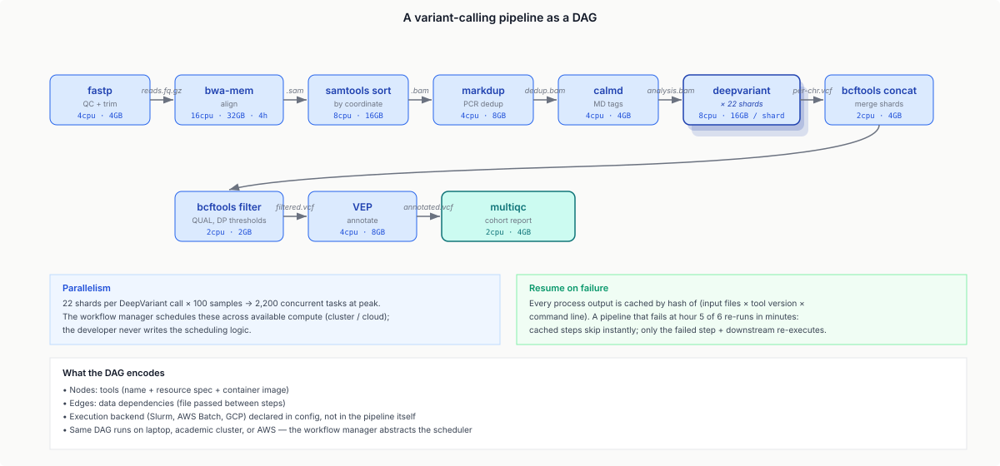
5.2 Nextflow, Snakemake, WDL, CWL
Four major workflow languages dominate.
Nextflow (Di Tommaso et al. 2017). Dataflow-oriented; channels and processes. DSL based on Groovy. Strong cloud support: AWS Batch, Azure, Google Cloud Life Sciences all supported natively. Auto-resume via -resume flag. Primary community: nf-core, a curated repository of >100 pipelines maintained to a common style guide. Industry-heavy adoption.
Snakemake (Köster & Rahmann 2012). Make-inspired; rules with input/output files. DSL based on Python. Academic-heavy adoption; excellent for ad-hoc pipeline development. Less cloud-native than Nextflow but catching up (--executor slurm, --executor kubernetes).
WDL (Workflow Description Language; Broad Institute 2015). Designed for the Cromwell execution engine. Task + workflow structure; static typing. Dominant in Broad/Cromwell ecosystem (Terra, GDC). Verbose but clear.
CWL (Common Workflow Language; 2016+ standard). Standardised workflow description; multiple execution engines. Heavy use in European bioinformatics infrastructure (ELIXIR). Less adoption in industry / GitHub-native projects.
| Nextflow | Snakemake | WDL | CWL | |
|---|---|---|---|---|
| Paradigm | Dataflow | Make-rules | Task-based | Task-based |
| DSL base | Groovy | Python | Custom | YAML/JSON |
| Cloud native | Excellent | Growing | Cromwell-centric | Moderate |
| Community | nf-core | Academic | Broad/Terra | ELIXIR |
| Learning curve | Moderate | Easy | Easy-mod | Steep |
| Reproducibility | Strong | Strong | Strong | Strong |
Which to choose? If you're joining a team, use whatever they use. For a new project: Nextflow if production / cloud / industry; Snakemake if research / rapid prototyping / academic cluster.
5.3 Resume, retry, resource management
What you actually get from a workflow manager:
Resume on failure. Every tool output is cached by hash (input files + tool version + command line). If step 10 fails and you fix the bug, rerunning skips everything up through step 9 because the cache hits. Nextflow's .nextflow/cache and Snakemake's output-file-timestamp tracking implement this. In practice: a 6-hour pipeline that fails at hour 5 restarts at hour 5 + 1 minute.
Per-process retry. If a tool fails spuriously (OOM-killed, transient network error), the workflow retries with backoff. Typical config: 3 retries with exponential backoff, optionally doubling memory on each retry.
Per-process resources. CPU, memory, time, queue / partition, container image. Declared per-process, respected by the scheduler. Example Nextflow:
process bwa_mem {
cpus 16
memory '32 GB'
time '4 h'
container 'quay.io/biocontainers/bwa:0.7.17'
...
}
Execution backends: Slurm, PBS, SGE, AWS Batch, Azure, Google Cloud Life Sciences, local — specified via a config file, not the pipeline definition. Same pipeline runs on any backend.
Provenance + reports: every run produces an HTML report documenting which steps ran, their inputs / outputs, and runtimes. Nextflow Tower / Seqera Platform productionises this for teams.
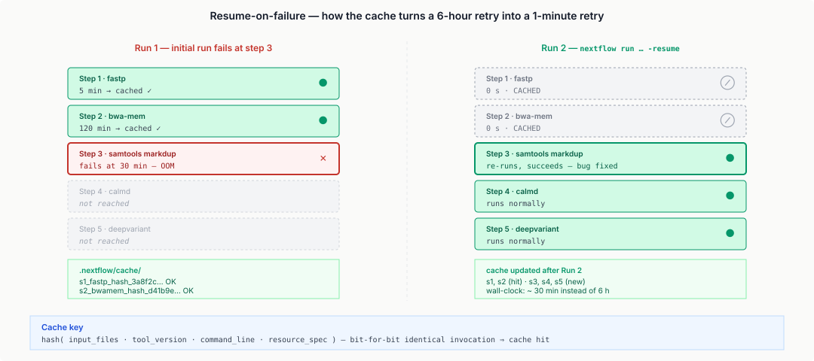
5.4 Nextflow's nf-core community
nf-core is a curated collection of Nextflow pipelines with:
- Standardised style (testing, linting, documentation, config layout).
- Community maintenance — actively developed by a global team of maintainers.
- CI/CD — every PR runs the pipeline on test data; breaks in tool updates are caught before release.
- Container support — every tool wrapped in a BioContainer; pipeline runs anywhere.
- Institutional infrastructure — Slack, monthly calls, hackathons.
Flagship pipelines: nf-core/rnaseq, nf-core/sarek (germline + somatic variants), nf-core/atacseq, nf-core/scrnaseq, nf-core/proteomics, nf-core/methylseq, nf-core/fetchngs.
Not everyone uses nf-core pipelines, but most modern production bioinformatics runs on something nf-core-shaped. If your lab has a "which pipeline for X" problem, check nf-core first — you'll probably find it.
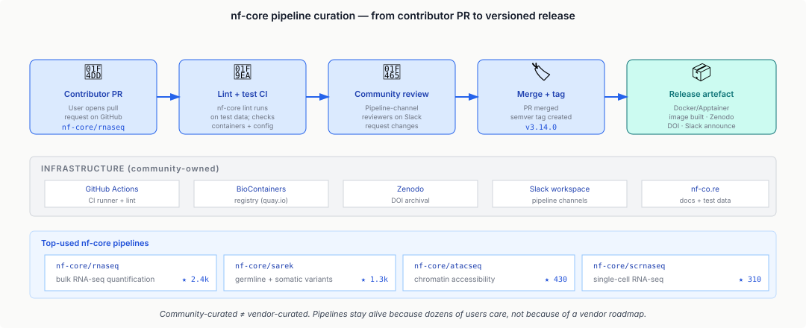
Part 6 · 25 min Benchmarking and Validation
6.1 GIAB — the ground-truth datasets
The Genome In A Bottle (GIAB) Consortium (Zook et al. 2014+; NIST-led) produces highly-validated "truth sets" for human variant calling. The canonical GIAB sample: HG002 (an Ashkenazi-Jewish trio member), sequenced with every major technology, variant-called by every major caller, manually curated. The resulting "high-confidence variant set" + "confident-region BED" is the gold standard for variant-caller benchmarking.
GIAB releases:
- v3.2.2 (2016) — early confidence set; widely cited in variant-caller papers 2016–2019.
- v4.2.1 (2021) — expanded to more samples, improved SV coverage.
- v5.0 (2024) — T2T-based; handles pericentromeric / repetitive regions previously excluded.
Each release has a truth VCF (the set of real variants), a confident region BED (regions where the truth set is reliable), and per-region callability metrics. Outside confident regions, the ground truth is unreliable (often because the region is too repetitive for any current tech). Benchmarking a new variant caller against GIAB is the field's way of establishing baseline performance.
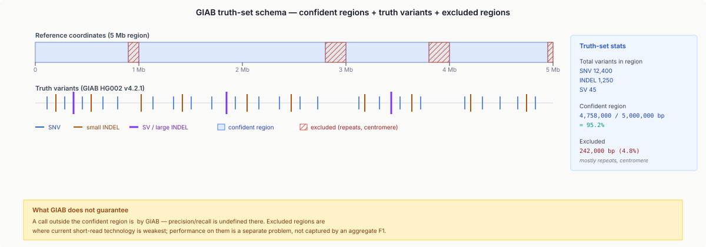
6.2 hap.py and precision/recall
hap.py (Illumina; now Google-maintained fork) is the standard variant-calling benchmarker. Given a test VCF and the GIAB truth + confident region, hap.py:
- Normalises both VCFs (left-align, split multi-allelics, deduplicate).
- Restricts to the confident region.
- Matches test variants to truth variants — tricky because representation can differ (e.g. the same deletion expressed as
REF=AC ALT=AvsREF=CA ALT=C). - Classifies each variant as TP, FP, or FN.
- Reports precision, recall, F1, and per-variant-type breakdowns.
Per-variant-type metrics matter because a caller can be great at SNVs and terrible at small indels. A single "F1 = 0.997" doesn't distinguish them. hap.py's output table typically has rows for SNV, INDEL_1–5, INDEL_6–15, INDEL_16+, each with its own precision / recall.
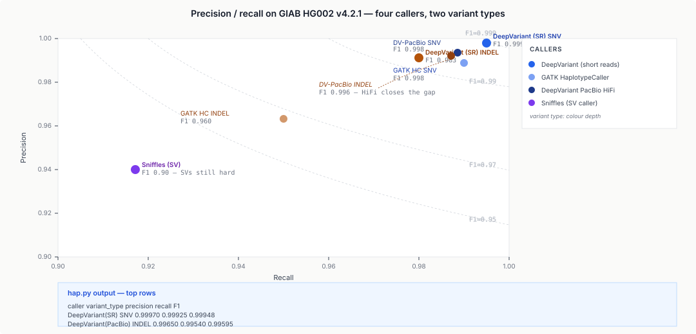
6.3 Beyond variant calling — benchmark culture
Every major sub-field has a benchmark:
- Variant calling: GIAB + hap.py.
- RNA-seq quantification: SQANTI, SRA test sets.
- Structural variants: GIAB SV benchmark + Truvari.
- Single-cell: cellxgene "nice tissues" benchmarks;
sccloudbenchmark for integration. - Protein structure: CASP (biennial, covered in L15).
- Genome assembly: QUAST.
- Metagenomics: CAMI.
The common pattern: a well-characterised ground truth, a reference evaluation script, and a community norm of reporting performance on the benchmark in every methods paper. "If you report a new variant caller without a GIAB benchmark, reviewers will ask."
6.4 What benchmarks do and don't guarantee
Benchmarks measure performance on the specific data they evaluate. Trade-offs:
- Overfitting. Published methods can be implicitly tuned on GIAB HG002. A new method's 0.001 F1 improvement may not generalise to other samples.
- Coverage. GIAB covers ~95% of the autosomes for SNVs but much less for SVs, repeat regions, HLA. Method rankings outside the confident region are undefined.
- Population. HG002 is Ashkenazi; GIAB has smaller trio sets for African and Asian samples, but coverage is less mature. Ranking on GIAB doesn't guarantee performance in diverse populations.
- Technology. Benchmarks historically grew around Illumina short reads; long-read benchmarks are newer and less mature.
A 2025 reader should interpret "F1 = 0.997 on GIAB HG002" as "this method is competitive on standard human WGS in European-ancestry samples." Deployment in other contexts (clinical tumour samples, non-human species, rare conditions) requires additional validation.
Part 7 · 15 min The Culture
7.1 Preprints and bioRxiv
Bioinformatics / genomics has embraced preprints harder than most biomedical fields:
- bioRxiv (2013+) — the standard genomics/biology preprint server. Most methods papers land here before peer review; the community reads them routinely.
- medRxiv (2019+) — the clinical / epidemiology counterpart.
- arXiv — still used for ML-heavy papers (AlphaFold, scVI, Enformer), especially when cross-listed to bioRxiv or stat/ML venues.
Typical flow: preprint on bioRxiv → feedback from community (tweets, GitHub issues, direct emails) → revised version → journal submission → peer review → publication. The time between preprint and formal publication is 6–18 months; citations begin accumulating on the preprint version. Consequence: your job as a reader is to evaluate preprints on technical merit, not wait for peer review.
7.2 Open-source norms
Bioinformatics has an unusually strong open-source culture:
- Code: Almost all new tools are GitHub-hosted with permissive licenses (MIT, BSD, Apache). Tools that refuse to share code are viewed with suspicion.
- Data: covered in Part 2 — repositories require deposition of raw data before publication.
- Benchmarks: GIAB, CASP, etc. are open, community-curated.
- Pipelines: nf-core, Snakemake-Workflows, pipelines-community maintain open, documented pipelines for common tasks.
- Documentation: Bioconductor requires a package vignette; modern Python tools produce Sphinx / MkDocs sites automatically.
Why? Partly because the field is academic-majority (at least by origin). Partly because the data economy requires open software to even be usable (you can't sell a variant caller when the inputs are free). Partly because the community has self-selected for openness over generations. Consequence for EE students entering the field: your published work is expected to come with working code. "My tool is proprietary / I'll share by request" is a weak signal to the community.
7.3 Institutional infrastructure
The field runs on a surprisingly small set of core institutions:
- NIH (NHGRI, NCBI) — funding + repositories (SRA, GenBank, dbGaP).
- EBI (Wellcome Sanger / EMBL) — European counterpart; ENA, Ensembl.
- Broad Institute — major methods source (GATK, DeepVariant-adjacent pipelines, much of the Cromwell/WDL ecosystem).
- Sanger Institute — major methods source (Nextflow + nf-core, HGI, pangenome).
- UCSC — genome browser, reference-assembly curation historically.
Commercial players matter less than in most fields. Illumina dominates sequencing hardware; tool ecosystems are community-driven.
7.4 The reproducibility crisis
Bioinformatics has its own reproducibility crisis: old papers frequently can't be rerun because (a) data access changed (dbGaP permissions expired), (b) tool versions were unpinned, (c) reference builds were mismatched, (d) authors left for industry and GitHub repos went stale. Estimates suggest ≥30% of published bioinformatics pipelines can't be re-executed 5 years later.
Modern norms — containerised pipelines, pinned references, archival of code in Zenodo with DOI — are a response to this. Whether they work at 10-year timescales is an open question.
Wrap-up · 10 min Takeaways, homework, and next lecture
What you should take away
- Format design is about partial access. Every good bioinformatics format — BAM, BCF, HDF5, Zarr, Parquet — lays out data so common queries touch contiguous bytes, with an index for seek. CRAM goes further with content-aware compression.
- Reference management is its own discipline. "GRCh38" is multiple references; know which variant your tool expects; pin by MD5 not filename. Reference mismatches are the silent-failure king.
- Data lives in repositories that distinguish open-access from controlled-access. SRA/ENA/GEO for open; dbGaP/EGA/GDC for clinical-identifiable. Cloud-hosted copies are the working standard for large datasets; requester-pays buckets shift cost to the analyst.
- Dependency hell is worse in bioinformatics than most fields. Mixed language ecosystems + aging academic software + system-level deps. Containers (Docker, Apptainer) + environment managers (conda, mamba) solve it; BioContainers + conda-forge automate packaging.
- Workflow languages are specialised dataflow runtimes. Nextflow, Snakemake, WDL, CWL all express the pipeline as a DAG + tools + resource spec. Resume-on-failure, parallelism, and cloud execution are first-class features. Nextflow + nf-core is the production-cloud standard; Snakemake is the research-cluster standard.
- Benchmarks anchor the field. GIAB is bioinformatics's ImageNet. Every variant-caller paper benchmarks against GIAB + hap.py. A method without a benchmark is under-evaluated.
- Open-source, preprint-first, institution-anchored. Code, data, and pipelines are expected outputs of new methods; institutional repositories (NCBI, EBI, Broad, Sanger) are foundational.
- Reproducibility requires pinning everything. Containers, references, seeds, pipeline code — all versioned and archived. "My code is on GitHub" is necessary but not sufficient; archival in Zenodo / Software Heritage Archive is the durable version.
Next lecture
Protein structure prediction in the AlphaFold era. Primary → tertiary structure; the classical era (Modeller, threading, CASP); MSA-based contact prediction (DCA, EVfold); AlphaFold2's Evoformer + structure module; AlphaFold3's diffusion; inverse folding (ProteinMPNN, RFDiffusion); what the field has and hasn't been transformed by.
Homework
- Convert a single 30× WGS BAM to CRAM with quality binning. Measure the size before and after, and the time to read a 10 kb region with
samtools viewon both. Report the ratios. - Pick a recent variant-caller paper from bioRxiv. Try to run its pipeline end-to-end on HG002. Document every dependency issue and how you resolved it. (Optional: submit a PR to fix a broken README.)
- Take an existing shell-script pipeline (yours or someone else's) with 5+ steps and port it to Snakemake or Nextflow. Run it twice with
-resume— first with clean state, second after deleting an intermediate. Report the runtime savings. - Download the GIAB HG002 v4.2.1 truth set and run hap.py against a public DeepVariant VCF on the same sample. Report SNV and INDEL precision / recall.
- Read the Nextflow Tower documentation or the Snakemake Workflow Management System paper. Summarise the resume-on-failure mechanism in your own words: how does the manager know which steps need to re-run?
Recommended reading
- Cochrane, G., Cochrane, D., & Birney, E. (2013). Efficient storage of high throughput DNA sequencing data using reference-based compression. Genome Research 21, 734–740. (CRAM.)
- Danecek, P., Bonfield, J. K., Liddle, J., et al. (2021). Twelve years of SAMtools and BCFtools. GigaScience 10, giab008.
- Wolf, F. A., Angerer, P., & Theis, F. J. (2018). SCANPY: large-scale single-cell gene expression data analysis. Genome Biology 19, 15. (AnnData + HDF5.)
- Miles, A., Kirkham, J., Durant, M., et al. (2020+). Zarr specification. Zenodo.
- Di Tommaso, P., Chatzou, M., Floden, E. W., et al. (2017). Nextflow enables reproducible computational workflows. Nature Biotechnology 35, 316–319.
- Köster, J., & Rahmann, S. (2012). Snakemake — a scalable bioinformatics workflow engine. Bioinformatics 28, 2520–2522.
- Ewels, P. A., Peltzer, A., Fillinger, S., et al. (2020). The nf-core framework for community-curated bioinformatics pipelines. Nature Biotechnology 38, 276–278.
- Zook, J. M., Chapman, B., Wang, J., et al. (2014). Integrating human sequence data sets provides a resource of benchmark SNP and indel genotype calls. Nature Biotechnology 32, 246–251. (GIAB.)
- Krusche, P., Trigg, L., Boutros, P. C., et al. (2019). Best practices for benchmarking germline small-variant calls in human genomes. Nature Biotechnology 37, 555–560. (hap.py.)
- Stolarczyk, M., Reuter, V. P., Smith, J. P., et al. (2020). Refgenie: a reference genome resource manager. GigaScience 9, giz149.
- Kurtzer, G. M., Sochat, V., & Bauer, M. W. (2017). Singularity: Scientific containers for mobility of compute. PLoS ONE 12, e0177459.
- da Veiga Leprevost, F., Grüning, B. A., Alves Aflitos, S., et al. (2017). BioContainers: an open-source and community-driven framework for software standardization. Bioinformatics 33, 2580–2582.
- bioRxiv: biorxiv.org. nf-core: nf-co.re. GIAB: nist.gov/genome-bottle.
Appendix — timing summary
| Block | Time | Cumulative |
|---|---|---|
| Part 1 — File Formats and Their Tradeoffs | 40 min | 0:40 |
| Part 2 — Where Data Lives | 30 min | 1:10 |
| Part 3 — Reference Data Management | 20 min | 1:30 |
| Part 4 — Containerization | 30 min | 2:00 |
| Part 5 — Workflow Languages as a Class | 40 min | 2:40 |
| Part 6 — Benchmarking and Validation | 25 min | 3:05 |
| Part 7 — The Culture | 15 min | 3:20 |
| Wrap-up | 10 min | 3:30 |
Total: ~3h 30min of content.